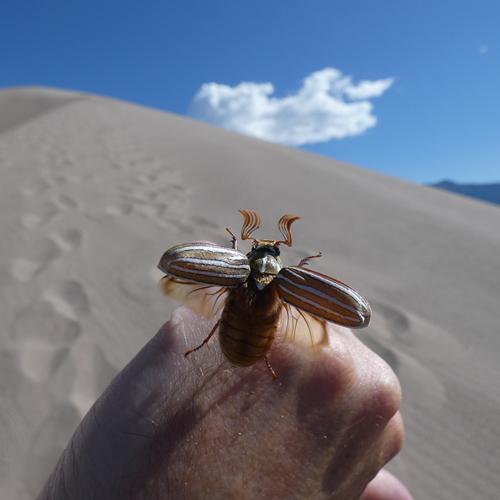

Exercice 1 : retouche et étalonnage d'une image
Sujet
Le but de cet exercice est de préparer une image pour une application de vision par ordinateur. Vous la trouverez ici.

Il s'agit d'une image JPEG d'un Polyphylla decemlineata, une espèce de hanneton appelé "Ten lined June beetle" aux Etats-Unis :

Cette photographie a été prise dans le parc national "Great Sand Dunes" (Colorado, USA). D'après ses métadonnées, elle a les propriétés suivantes :
| Propriété | Valeur |
|---|---|
| Ouverture | \(f/2.8\) |
| Temps d'exposition | \(1/2500 s\) |
| ISO | \(80\) |
| Distance focale | \(4 mm\) |
| Résolution | \(3000 \times 3000\) |
| Poids | \(1.74 Mo\) |
| Format | JPEG |
| Profondeur de couleur | \(24 bits\) |
| Encodage des couleurs | sRGB |
Question 1 : la mise au point
Pour prendre cette photographie, une caméra ayant un objectif classique constitué d'un lentille convergente de focale fixe, que nous considèrerons parfaite, a été utilisée.
Imaginons que le hanneton mesure 5 cm, et se trouve à 25 cm de la caméra au moment de la photographie.
-
A quelle distance du capteur photographique doit-on placer la lentille de l'objectif afin de faire la mise au point ?
-
Quelle sera alors la taille de l'image du hanneton sur le capteur photographique ?
Question 2 : la profondeur de champ
- Quel est ici le diamètre d'ouverture du diaphragme ?
Considérons que le cercle de confusion du capeur photographique a un diamètre de 5 µm.
Pour le choix d'ouverture et de distance de mise au point qui ont été faits pour cette photographie :
-
Quelle est la distance hyperfocale ?
-
Quelle est la distance la plus proche considérée comme nette ?
-
Quelle est la distance la plus lointaine considérée comme nette ?
-
Déduisez-en la profondeur de champ.
Question 3 : l'exposition
Avec le temps d'exposition et l'ouverture choisie :
- Quel est l'indice de lumination (ou EV) ?
On considère qu'une scène très ensoleillée comme celle que nous avons photographiée ici nécessite une EV pour ISO 100 (ou \(EV_{100}\)) de 15.
- Pour obtenir un résultat similaire à \(EV_{100} = 15\) pour ISO 80, quelle EV faudrait-il choisir ? Notre choix d'exposition est-il donc adapté ? Sinon, faudrait-il augmenter ou diminuer l'exposition ?
Partons des hypothèses suivantes : le hanneton s'envole et il bouge donc rapidement, l'appareil a un temps d'exposition minimum de 1/2500 s, et le photographe veut une profondeur de champ resserrée sur le hanneton.
- Expliquez pourquoi nous ne pouvons donc pas jouer sur la valeur d'EV pour obtenir un résultat similaire à \(EV_{100} = 15\) pour ISO 80 ?
On décide donc de plutôt jouer sur le paramètre ISO de l'appareil photographique :
- Quelle valeur d'ISO utiliser pour obtenir un résultat similaire à \(EV_{100} = 15\), pour la même valeur d'EV ?
Question 4 : la discrétisation
Vous l'aurez remarqué, il y a des rayures sur la carapace du hanneton. Imaginons que sur l'image du hanneton formée sur le capteur, la distance entre 2 rayures soit de 10 µm.
- Quelle doit être la distance d'échantillonnage maximale sur le capteur afin d'éviter un phénomène d'aliasing ?
D'après les métadonnées, les couleurs de l'image sont encodées en sRGB, avec une profondeur de 24 bits, et la résolution de l'image est de \(3000 \times 3000\).
- Quelle devrait être le poids de l'image en Mo ?
Toujours d'après les métadonnées, le poids de l'image est en réalité de 1.74 Mo.
- Comment expliquez-vous cette différence ?
Question 5 : analyse des histogrammes
Nous allons à présent analyser les histogrammes de notre image :
-
Importez l'image sous Python avec la bibliothèque Pillow.
-
Affichez sur un même graphique les histogrammes de l'image pour les 3 primaires, et repérez les différents pics. Commentez les histogrammes en termes de luminosité et de contraste.
-
Séparez les 3 matrices correspondant aux 3 primaires, appliquez leurs des seuils bien choisis et affichez-les pour essayer d'identifier l'origine des différents pics des histogrammes.
-
Quelles zones de l'image identifiez-vous dans l'histogramme ?
Question 6 : égalisation d'histogramme
Essayons d'optimiser le contraste de notre image par égalisation d'histogramme :
- Convertissez l'image en HSV, et récupérez la composante V.
*